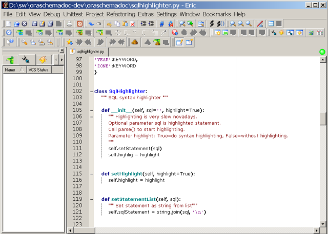

Python vazby na knihovnu Qt, aneb PyQt a spol.
Qt http://qt-project.org/ je C++ GUI knihovna (resp. knihovna s přidaným preprocesorem), kterou lze použít na celé řadě platforem. Na výběr je několik licenčních modelů použití (od GPL po Trolltech closed source). Právě variabilní licenční model dal vzniknout několika Python wrapperům:
Knihovna PyQt http://www.riverbankcomputing.co.uk/pyqt/, zřejmě nejznámější a nejpoužívanější moduly, co se Qt týče. Jsou pod duální licencí (GPL pro UNIX/Linux, MacOS/X a Windows. Existují ještě "školské" licence atd., ale to nastuduj na webu).
S instalací a použítím obou knihoven jsem neměl žádný problém a vše funguje k mé plné spokojenosti i nadále.
Povídání...
Jedna z věcí, která mne k Qt dotlačila, byla příkladná a nevídaná vývojářská dokumentace a průzračnost kódu. A protože uvedené Python wrappery používají stejné API, je radost v PyQt vyvíjet podle "dokumentace":http://qt-project.org/doc/ - pro C++ neznalé: v dokumentaci si odmyslete věci, kterým nerozumíte, jako jsou např. slova const, něco_cast a znaky & nebo *. Ty v PyQt nepotřebujete, protože se o takovou černou magii postará samotný wrapper.
Nejjednodušší a doporučovaný způsob použití GUI PyQt je následující:
- v designeru si navrhnu dialog a uložím jej do tzv. ui (user interface) souboru: 'form1.ui'
- ui soubor převedu programem 'pyuic' do Python zdrojového kódu, ale nikdy ho neměním ručně, pouze opakovanou sekvencí designer-pyuic: 'pyuic -o form.py form.ui'
- vzniklý py soubor/třídu použiju jako rodiče nově děděné třídy, ve které provádím vlastní zněny.
Takhle se totiž elegantně vyhnu možnosti, kdy bych změnou v designeru přišel a přidaný kód a naopak si neznemožním připsáním funkcionality měnit vzhled přes pohodlný nástroj.
Poznámka
PyQt v.4.5.4 je jeden z prvních větších frameworků co podporuje Python 3.x
PySide
Od roku 2009 je Qt k dispozici i pod licencí LGPL. Ta umožňuje ji používat zdarma i u programů s uzavřeným zdrojovým kódem za určitých podmínek (reálně to znamená používat dynamické linkování - DLL na Windows a nelinkovat staticky). PyQt ale variantu LGPL nepřidalo. Vznikl proto nový wrapper PySide http://qt-project.org/wiki/Category:LanguageBindings::PySide . Český tutorial (odkaz na první díl): http://mhblog.cz/programovani/173-gui-v-pythonu-1-dil-seznameni-s-pyside (byť si troufám tvrdit, že informace o tom, že PySide je fork PyQt je mylná)